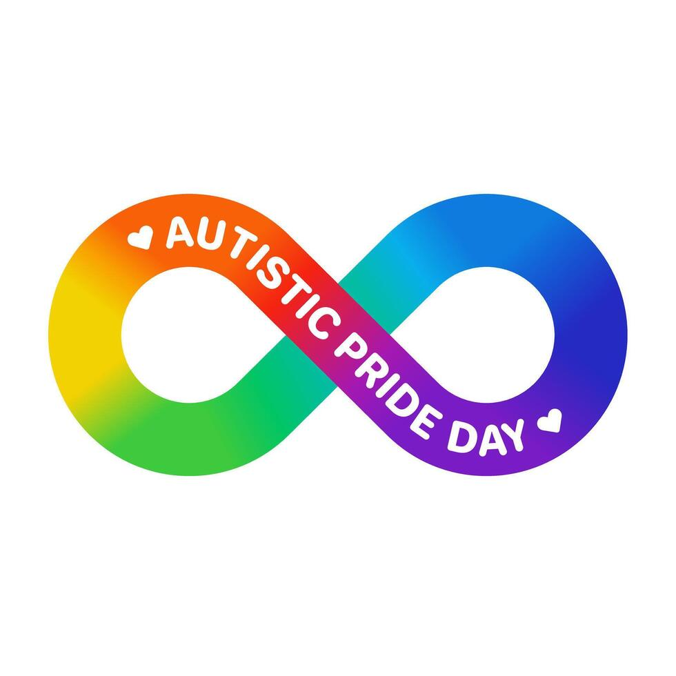

I show a fixiation of computers as a kid. I play tons of video games here. Then, I explore the same way with smart phones and gaming consoles. My father thought I was autistic or the math kid. Though, gaming drives me into pursuing computers. Therefore, I learn much of computer science and engineering myself.
I grew up in Saudi Arabia. We enjoy a lot of time in our apartment. Although Filipinos were limited there, we constantly adjust to the Arab life. Except my social skills, because I acted aloof to my Filipino peers. Sometimes, school was hard. I didn't know the timing to keep friends. Most of the time, I really sucked at activities that required me to mingle like decathlons and sports.
Meanwhile, the lack of filipino contact lead me into immersing technology. Playing video games and solving math problems became my forte. Innovating was way more than just working my butt of to succeed in school.
Arriving in Dumaguete came with more challenges. At first, it was Silliman. Because of my social challenges, my classmate ignored me or talked behind my back. Although, I was doing decent here, I couldn't bare the load. So I kept transferring school to school. Next came with college. I was baffled by the obsolete instructions of my professors. Despite my efforts, they reward me less: low grades and no year-end awards.
My cousins never believed me. School performance matters for them. After enduring the harsh treatments of the four University horsemen, I made a deal. If I innovate something beyond school and they love it, I would've won.
Now, it's up to you to respond for help. The more we worked together, the more we can teach the Universities a lesson. In the meantime, I'll just study and chill.

“Autism is not a disability; it’s a different ability.”
—Alex Plank
“Being a parent of a child with autism is the ultimate test of flexibility.”
—Dena Gassner
“If the autism gene were eliminated, people would just chat in caves and do nothing.”
—Temple Grandin